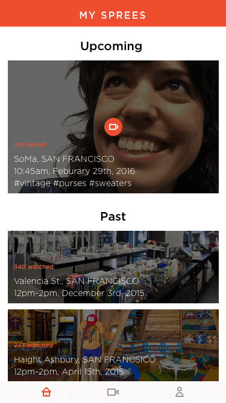
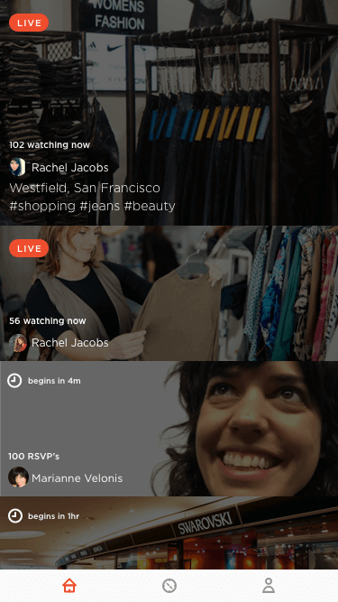
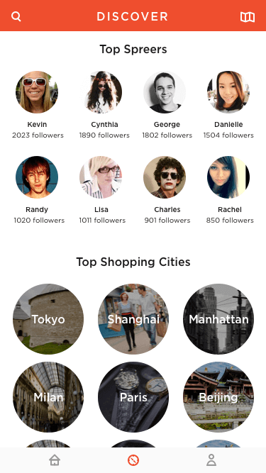
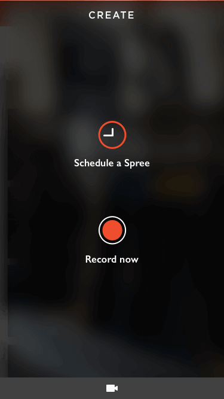

<!DOCTYPE html>
<html></html>
<head>
  <meta charset="utf-8">
  <meta http-equiv="X-UA-Compatible" content="IE=edge">
  <meta name="viewport" content="width=device-width"/>
  <title>Peter An-Designer</title>
  <link rel="stylesheet" href="ebay.css">
  <link rel="stylesheet" href="../owl-carousel/owl.carousel.css">
  <link rel="stylesheet" href="../owl-carousel/owl.theme.css">
</head>

<body>
  <header class="head">
    <a href="../index.html"><h5>The Design and Directory of Peter An</h5></a>
    <h5 class="end"><a href="archive.html">Archive</a></h5>
  </header>
  <div class="container">
    <div id="owl-demo" class="owl-carousel owl-theme">
      <div class="item">
        
      </div>
      <div class="item">
        
      </div>
      <div class="item"></div>
      <div class="item"></div>
      <div class="item"></div>

    </div>


    <div class="text">
      <div class="descript">
        <p>Ebay approached our team at Junior to help them redefine the online shopping experience. We kicked off the project with a week long design sprint filled with ideation, UX mapping, and prototyping with the goal of creating a viable idea for a pitch by week’s end. Our team gravitated towards a social shopping experience leveraging live video streams and a community of influencers. This pitch won Ebay’s design sprint and is currently in development.</p>
      </div>
      <div class="info">
        <p><span>Project Name : Ebay Spree</span></p>
        <p><span>Type : Product Design, UX/UI, Interaction Design</span></p>
        <p><span>Tools Used : Premiere Pro, After Effects, Illustrator </span></p>
      </div>
    </div>
  </div>

  <footer>
        <h5 class="footer-links"><a href="https://medium.com/@peetparkaa" class="foot-1">scripts</a></h5>
      </footer>

  <script src="https://ajax.googleapis.com/ajax/libs/jquery/1.12.0/jquery.min.js">
  </script>
  <script src="../owl-carousel/owl.carousel.js"></script>

  <script>
  $(document).ready(function() {
    $("#owl-demo").owlCarousel({

      navigation : true, // Show next and prev buttons
      slideSpeed : 300,
      paginationSpeed : 400,
      singleItem:true
    });
  });
  </script>
</body>
</html>
